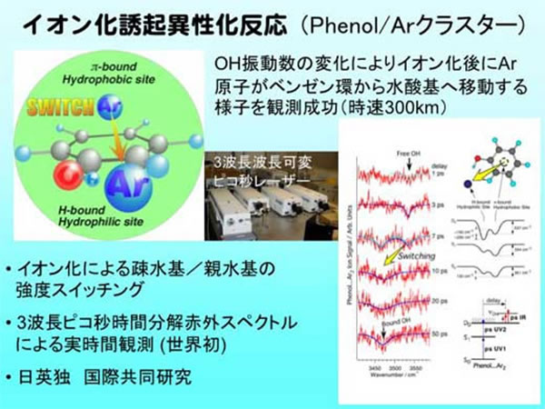

20世紀は精密化の時代で、物理化学も複雑な現実の系にあるとわからない分子単体の性質を明らかにするために極低温冷却や気相超音速分子線、
レーザー分光などを駆使して孤立分子の性質を追求してきたと思います。
また、理論化学/計算化学の進歩も理想的な孤立分子の性質を調べる上では大変強力な方法になってきました。
ここまで孤立分子の性質が分かってきた現在、孤立分子の性質や素過程の理解を進めつつ、複雑な現実の系の理解に挑戦するべきだと考えています。
これに必要とされる新たな方法論の開拓も積極的に進ています。
以下トピックスの例を２つ簡単にご紹介します。
イオン化誘起異性化反応

これは藤井のトピックスのうち、最も伝統的なレーザー分光研究に近いもので、分子クラスターを対象とした研究例です。
分子クラスターは溶液・凝集相のミクロなモデルであり、素過程を研究するのに適した系です。
ここで取り上げたフェノール分子は水素結合できる親水基(水酸基)と分散力で相互作用する疎水基(芳香環)を有する最も小さな分子の一つです。
これとアルゴン原子をクラスター形成させると、中性状態では分散力が勝りアルゴン原子が芳香環上に結合します。
一方、レーザーイオン化させると水素結合力が増大し、アルゴン原子が水酸基へ7ピコ秒でサイトスイッチングすることを実時間で初めて観測する事に成功しました。
このために用いた3波長ピコ秒時間分解赤外分光法も世界で初めてのものです。
このようにイオン化は電荷の出現により分子の性質と分子間相互作用に大きな変化をもたらす現象であり、イオン化誘起異性化反応はイオン化による溶媒再配向の素過程的理解としても重要と考えています。
クラスター研究では光励起した芳香族酸が中性ラジカル反応するという新反応チャンネルも初めて実証する事に成功しております。
レーザ共鳴多光子イオン化（REMPI）ー混合物中を狙った分子だけを高効率イオン化

現実に即したもう一つの不均一系は環境測定です。特に燃焼は焼却炉や内燃機関など身近で有用な現象ですが、これらの現象を微量な物質までリアルタイムで実際に何が起きているのかを測定した例はほとんどありません。
これは、従来の分析化学では濃縮・抽出と言った前処理によって感度を向上させていたためで、ダイオキシンや多環系芳香族といった超微量で人体に有害な物質に関しては２週間といった長大な期間が前処理のみに費やされています。
私たちは分子・クラスターの研究を通して高感度な分光法を開発しており、これを用いることでこの問題を容易に解決しました。具体的には共鳴多光子イオン化(ＲＥＭＰＩ)という方法です。
これは、物質の吸収帯(色)と照射するレーザーの波長が一致するとイオン化効率が劇的に高くなるという現象を利用するものです。
混合物の中で自分が注目する物質にレーザー波長を同調させるとその物質だけを一切の前処理なしでイオン化検出できます。
しかも共鳴効果のお蔭で実績感度は５０，０００分子／ｃｍ３という超高感度です。これを実際のゴミ焼却炉に接続し、ダイオキシン前駆体である塩化ベンゼンを10秒間隔のリアルタイムで前処理なく検出する事に成功してます。
現在、この方法はイオンビームと組み合わせて微粒子の履歴解析装置の開発(先端計測分析技術・機器開発事業)および環境・燃焼ガスに関するレーザー多光子分析(統合研究院プロジェクト)として推進されています。